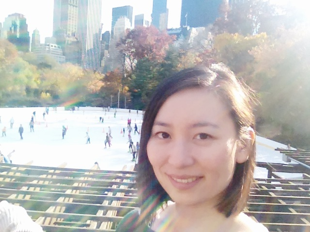

About Me
Hi! My name is Anco Chien and I am passionate about helping kids reach their full potential. My job involves giving assessments, writing educational plans, and teaching. My clients include children and adults who have a learning disability; are diagnosed with autism spectrum disorder; or are neurotypical. My passion and interest is learning how to create software to help children and adults strengthen their underlying learning processes so they can reach their language and literacy potential. How did this become my life?
Well, in 2010, I was living as an expat in Taipei, Taiwan to learn Mandarin and fully immerse myself in the culture. I had two conversation partners who I'd meet up with twice a week. Turns out, most Taiwanese people want to learn English. I was offered a job teaching English to business professionals. But after a few months, I realized they needed something more intensive that I alone could not provide.
So I moved backed to California and learned all about learning. My goal is to create accessible, effective software for children and adults to use.
Find me on LinkedIn, Github, and Stack Overflow!
Connect With Me